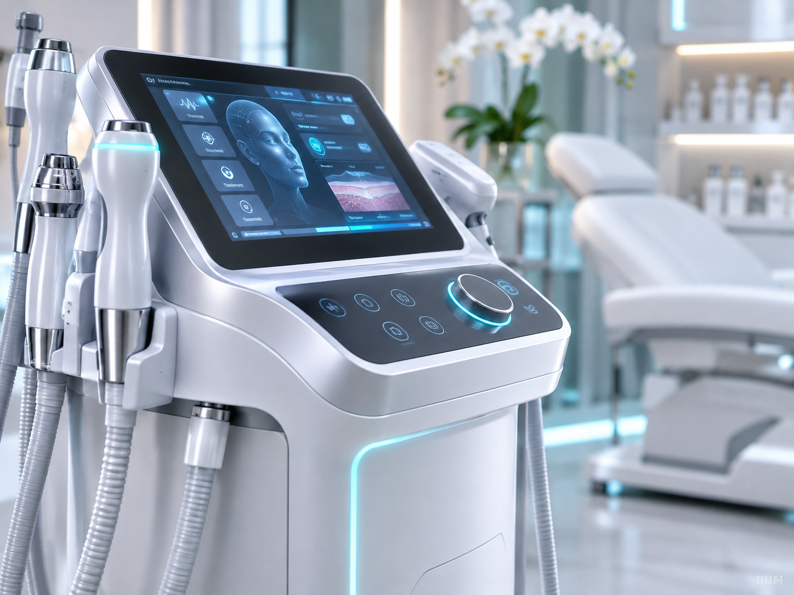

Aesthetic Medicine

01 / Aesthetics
Aesthetic & Dermatological Technology
We source and distribute cutting-edge non-invasive and minimally invasive medical aesthetics platforms designed for precision skin rejuvenation, facial remodeling, and targeted dermatological care.
- Fractional radiofrequency (RF) microneedling and skin tightening systems.
- Picosecond and vascular laser workstations for pigmentation and vascular therapies.
- Non-surgical body contouring, fat reduction, and muscle stimulation technology.
- Precision dermal diagnostic scanners and high-magnification skin imaging consoles.